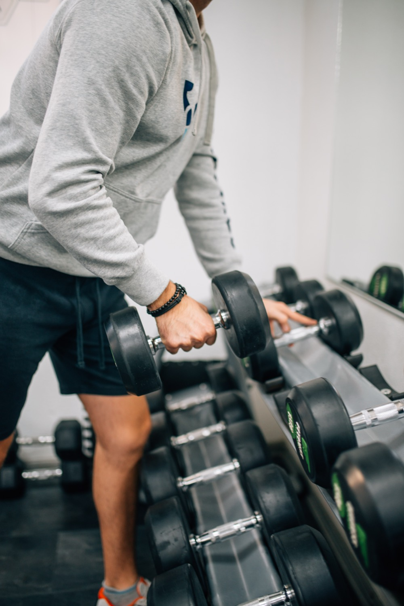
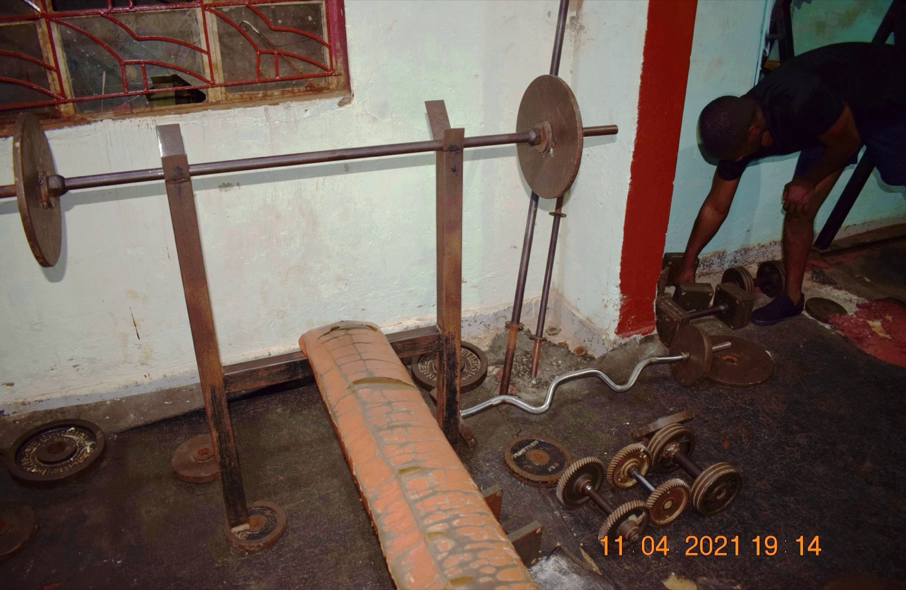

Travel is only half of how I live. The other half is early workouts, run-club mornings, trail days, and trying to show up strong for all of it — at home in the desert or six time zones away. The thing that quietly holds that together is a handful of supplements I genuinely trust, all from 1st Phorm. I've used them for a long stretch now, and the results — strength, recovery, energy, and just feeling good day to day — have been incredible. This is an honest breakdown of exactly what I use and why.
Heads up: this post contains affiliate links. If you buy through them I may earn a small commission at no extra cost to you — and I only recommend products I actually use. This is not medical advice; talk to a healthcare provider before starting any supplement. See my full disclosure.
Why 1st Phorm
There is no shortage of cheap supplements out there, and I've tried plenty of them. What pulled me to 1st Phorm and kept me there is simple: quality and honesty. Their formulas are transparent — no "proprietary blends" hiding how little of the good stuff you're actually getting — the products are made in the USA to a high standard, and the taste and mixability are genuinely better than most. It's a company built around a fitness community that actually cares whether you get results, and you can feel that in the product.
Is it the cheapest option on the shelf? No. But supplements are one of the few places I've decided quality is worth paying for, because I put them in my body every day and I want to know exactly what's in them. Here's the short list I actually reach for.
Creatine: The One I'd Never Skip
If I could only keep one supplement on this list, it would be creatine. It's the most researched sports supplement in existence, with a long, well-established safety record in healthy adults — and it just works. Creatine helps your muscles produce energy during hard efforts, which shows up as more strength, more power on your last few reps, better recovery between sessions, and even some evidence for cognitive benefits. For an active person, it's about the highest-value, lowest-cost upgrade you can make.
How I use it: about 5 grams of creatine monohydrate every day, mixed into water or a shake, timing not fussy — consistency is what matters, not the clock. No loading phase, no cycling, no complexity. I take it every single day and I've felt the difference in the gym and on the trail. If you're new to supplements and wondering where to start, start here.

Strength work is where creatine earns its keep — more power on the reps that count.
Whey Protein: How I Actually Hit My Numbers
Protein is the foundation of recovery and staying strong, and the honest truth is that most active people struggle to eat enough of it from food alone — especially when life is busy or you're on the road. A good whey protein solves that in about thirty seconds. I use 1st Phorm's whey as my daily insurance policy: a fast-digesting scoop like Phormula-1 right after a hard workout when my muscles are primed to rebuild, and their meal-style blend (Level-1) as a genuinely filling snack or light meal replacement when I'm slammed.
Two things make it stick for me: it actually tastes good (so I look forward to it instead of choking it down), and it travels. A shaker bottle and a few scoops mean I can keep my nutrition on track from a hotel room, an Airbnb kitchen, or a gym bag — no excuses, no drive-thru. Hitting your protein target is the least glamorous, most effective thing you can do for your body, and this is how I make it automatic.
Collagen: The One Your Joints Will Thank You For
Collagen is the supplement I didn't know I needed until I started taking it. It's the main structural protein in your skin, joints, tendons, and connective tissue — the stuff that takes a beating when you train hard, run often, and generally refuse to slow down. Supplementing may support joint comfort and connective-tissue health, along with the well-known perks for skin, hair, and nails.
For someone who's active most days, taking care of the joints and tendons is what keeps you able to keep going, and collagen is the easiest possible add: a scoop stirred into my morning coffee or a shake and I don't think about it again. It's the long game — an investment in still feeling good five and ten years of adventures from now.

The stack is simple on purpose: creatine, whey, collagen — three things, every day.
How I Stack Them
My routine is deliberately boring, because boring is what's sustainable. In the morning, collagen goes in the coffee. Creatine goes in my first bottle of water — 5 grams, done. After a workout, I hit a scoop of whey while my muscles are ready to use it, and on busy days a second protein shake replaces a meal I'd otherwise skip. That's the whole system. No 12-pill regimen, no overthinking — just three high-quality basics that cover the things that actually move the needle: strength, recovery, and staying healthy enough to keep training.
Staying Consistent on the Road
The hardest part of any supplement routine isn't the supplements — it's doing it when your life is chaotic. Travel is where most people's habits fall apart, so I built mine to survive it. Creatine and collagen are just powders that ride in a bag; a shaker bottle turns any hotel sink into a kitchen; and single servings of whey mean I can stay on track without hauling a whole tub through security. When the routine is simple enough to do anywhere, you actually do it anywhere — and consistency is the entire game.
The Honest Part
Let me be clear about what these do and don't do. Supplements support a result; they don't create one. The strength and the energy come from the training, the whole-food nutrition, and the sleep — the supplements just make all of that work a little better and a little easier to sustain. I've seen incredible results, but they came from years of showing up, with 1st Phorm along for the ride. And because everyone's body and health situation is different, this isn't medical advice — talk to your doctor before starting anything new, especially if you have a medical condition or take medication.
Frequently Asked Questions
Is creatine safe and worth taking?
Creatine monohydrate is the most researched sports supplement there is, with a strong safety record in healthy adults. It supports strength, power, and recovery at about 3–5 grams a day, with no loading phase needed. Check with your doctor if you have a medical condition.
Do I really need a whey protein powder?
Not strictly — but it makes hitting your daily protein target far easier, especially around workouts and while traveling. A fast whey like Phormula-1 is ideal post-workout; a blend like Level-1 works as a filling meal replacement.
What is collagen good for?
Collagen is the main structural protein in skin, joints, tendons, and connective tissue. Supplementing may support joint comfort and connective-tissue health, plus skin, hair, and nails — handy for active people loading their joints regularly.
Is 1st Phorm worth the price?
For me, yes — the transparent, high-quality formulas, the taste, and the consistency have been worth it. It costs more than bargain supplements, but supplements are one place I'll pay for quality. Just remember they support, not replace, good training, nutrition, and sleep.
That's the whole kit — creatine, whey, and collagen, three simple things I take almost every day whether I'm home or halfway around the world. If you're building an active life and want to give your body a real assist, this is the exact stack I trust. Put in the work, keep it consistent, and let the good stuff do its quiet job in the background.
Image credits: gym training photos by Nenad Stojkovic (CC BY 2.0); gym equipment by Alvinategyeka (CC BY-SA 4.0). Representative fitness images; cropped and resized from the originals.